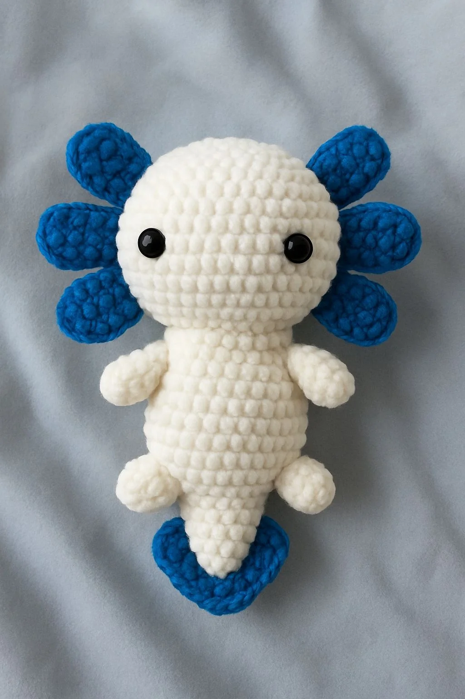

Los ajolotes están elaborados para que puedas transportarlos fácilmente, con detalles y accesorios que permiten cambiar su estilo según la ocasión. Son suaves, vibrantes y muy especiales, pensados como regalo único o para coleccionistas que valoran la originalidad y la creatividad en cada pieza.

hilo yarnart jeans en colores verde y crema
aguja de crochet de 1,5 mm
2 ojos de seguridad de 9 mm
alambre de 1 mm
tijeras